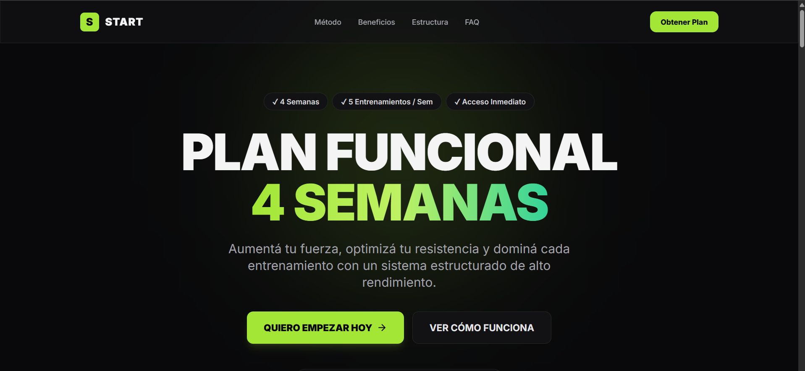

Una demostración visual de una landing orientada a presentar un programa funcional.

QUÉ ES
Una exploración visual para una landing de programa.
START es una demostración de diseño y estructura para explorar cómo podría presentarse un programa funcional en una página de destino clara y enfocada.
ENFOQUE
Una propuesta explicada desde lo esencial.
Presentación de una propuesta.
Jerarquía visual de la información.
Recorridos hacia una acción principal.
Estado actual
Proyecto conceptual y de prueba. No corresponde a un cliente real ni a un producto validado.